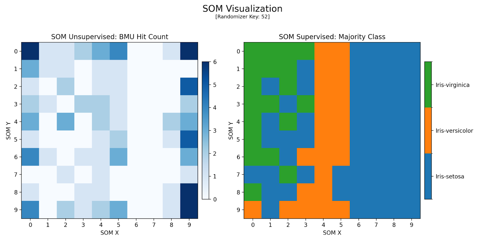
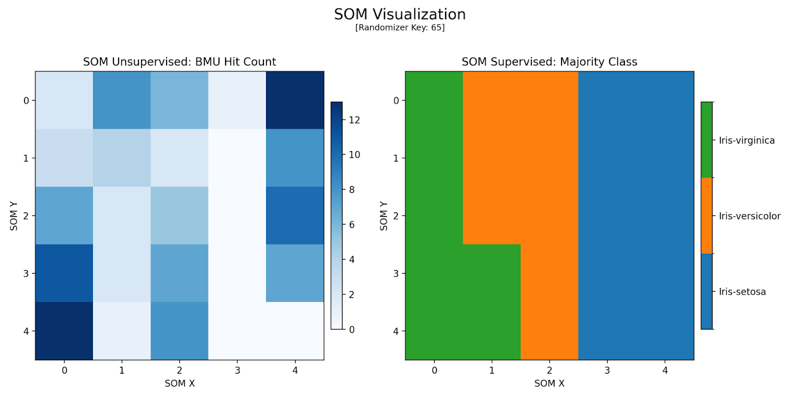
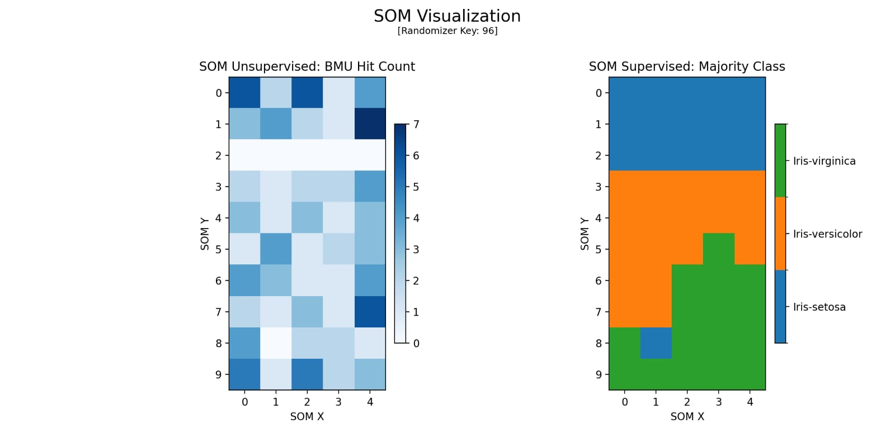
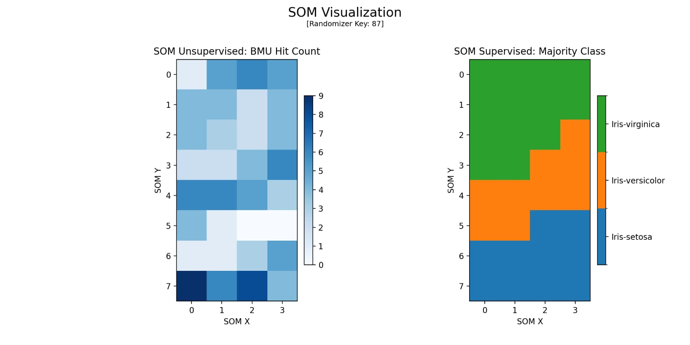
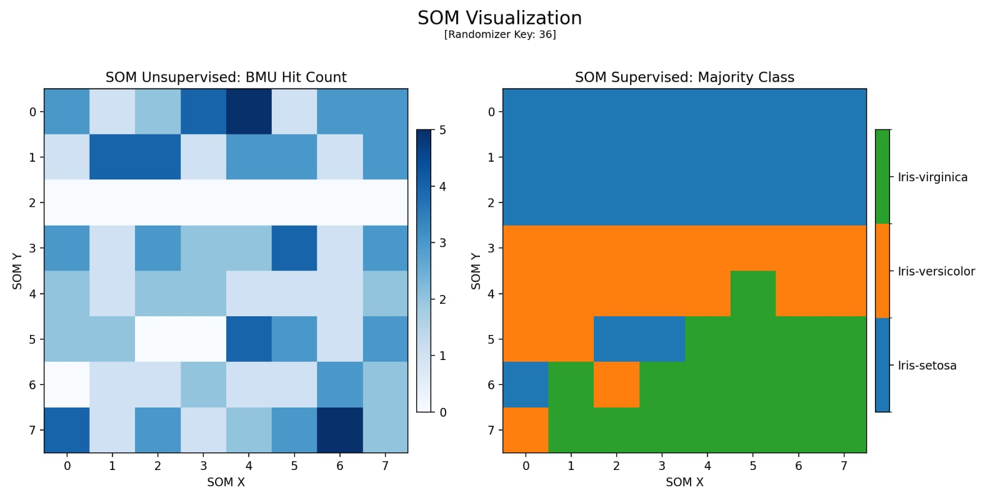
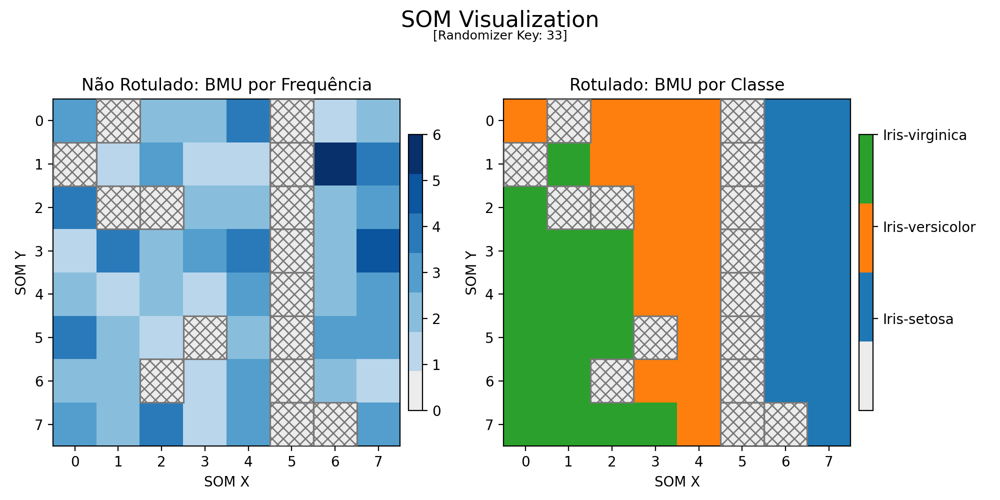

Hiperparâmetros
Os hiperparâmetros correspondem às variáveis que definem a estrutura e o comportamento do processo de treinamento do modelo Kohonen.
Entre eles, destacam-se:
Número de linhas (m) e colunas (n) - definem o tamanho do SOM grid, também chamado de Topologia.
Taxa de aprendizado inicial (lr) - controla a velocidade da atualização dos pesos. A taxa de aprendizado decai ao longo do treinamento.
Número de iterações (iters) - determina quantas vezes o modelo será ajustado.
Raio inicial da vizinhança (radius) - Área de influência dos neurônios vizinhos.
Chave aleatória (rand) - garante reprodutibilidade dos resultados.
As investigações envolveram modificações diretas destes hiperparâmetros ao longo de inúmeras execuções do código. Não foram realizadas alterações em tau (constante temporal), esta foi calculada automáticamente através da fórmula:
n_iter / np.log(cfg.radius)
Métricas
Para decidirmos qual foi o melhor resultado, foram utilizadas as seguintes métricas:
Acurácia; Proporção de amostras classificadas corretamente.
Distância; O visível agrupamento de neurônios ativados e os vales de não ativação de neurônios.
Pela natureza não supervisionada do modelo SOM, consideramos somente os resultados visíveis nos mapas gerados à esquerda das figuras demonstrativas. À direita estão presentes as correlações de cada região de ativação com as verdadeiras classes das base de dados. Isso serve como um "bônus" que possibilita o contraste dos resultados obtidos com a base de dados real, mas não guiou diretamente a nossa tomada de decisões no decorrer dos experimentos.
Fase 1
O programa em Python foi criado utilizando as bibliotecas SciKitLearn e MiniSOM para implementação do modelo SOM. Pandas e NumPy foram utilizados para leitura e manipulação das bases de dados. Por fim, MatPlotLib foi utilizado para visualização dos resultados.
A base de dados utilizada foi o Iris, que contém 4 atributos e 1 saída de 3 classes distintas (iris-setosa, iris-versicolor e iris-virginica). A base de dados foi carregada em tempo de execução através do comando fetch_ucirepo(id=53), conforme instruído pela provedora da base (UC Irvine).
Configuração Inicial
O código foi executado a partir da configuração inicial para análise primária:

--------------------------------
[SOM - Log de Informações]
Chave Aleatória : 52
Iterações : 20000
Topologia : 10 x 10
Taxa de Aprendizado : 0.4
Raio Inicial (Sigma) : 5.00
Tau : 12426.70
Melhor Acurácia : 0.800
Sistema Operacional : Windows 10.0.19045
Python : 3.12.9
--------------------------------
Figura 2: Mapa Gerado pela Configuração 1
Fase 2
Testes com diversos ajustes buscaram a melhor parametrização do modelo. Algumas configurações obtiveram resultados satisfatórios estão descritas abaixo, considerando acurácia e qualidade do mapa. Um dos mapas com pior desempenho também está listado.
Configuração 1
Separação de classes melhor que a original. A acurácia permaneceu em 83,3%.

--------------------------------
[SOM - Log de Informações]
Chave Aleatória : 65
Iterações : 1000
Topologia : 5 x 5
Taxa de Aprendizado : 0.5
Raio Inicial (Sigma) : 3.00
Tau : 910.24
Melhor Acurácia : 0.8333
Sistema Operacional : Windows 10.0.19045
Python : 3.12.9
--------------------------------
Figura 3: Mapa Gerado pela Configuração 1
Configuração 2
Utilizando-se de uma topologia retangular 10 x 5, observa-se um melhor destacamento de grupos e do “vale” que separa neurônios. A alta acurácia (96,7%) indica divisão dos dados em só dois grupos principais, refletindo uma sobreposição nas características (atributos) de Iris-versicolor e Iris-setosa.

--------------------------------
[SOM - Log de Informações]
Chave Aleatória : 96
Iterações : 30000
Topologia : 10 x 5
Taxa de Aprendizado : 0.5
Raio Inicial (Sigma) : 2.50
Tau : 32740.70
Melhor Acurácia : 0.967
Sistema Operacional : Linux
Python : 3.12.11
--------------------------------
Figura 4: Mapa Gerado pela Configuração 2
Configuração 3
Menor taxa de aprendizado e raio inicial resultaram numa separação parcial. A acurácia (86,7%) foi inferior e houve maior dificuldade em definir fronteiras entre atributos.

--------------------------------
[SOM - Log de Informações]
Chave Aleatória : 87
Iterações : 20000
Topologia : 8 x 4
Taxa de Aprendizado : 0.2
Raio Inicial (Sigma) : 1.50
Tau : 49326.07
Melhor Acurácia : 0.867
Sistema Operacional : Linux
Python : 3.12.11
--------------------------------
Figura 5: Mapa Gerado pela Configuração 3
Configuração 4
Elevada acurácia (96,7%) e separação mais uniforme dos neurônios ativados (BMUs) em 2 grupos, indicando um possível 3º grupo. Aumentar iterações por vezes melhora a representação topológica, reduzindo sobreposições e aumentando a qualidade do mapa.

--------------------------------
[SOM - Log de Informações]
Chave Aleatória : 36
Iterações : 65536
Topologia : 8 x 8
Taxa de Aprendizado : 0.25
Raio Inicial (Sigma) : 2.00
Tau : 94548.46
Melhor Acurácia : 0.967
Sistema Operacional : Linux
Python : 3.12.11
--------------------------------
Figura 6: Mapa Gerado pela Configuração 4
Fase 3
A fase 3 consistiu na aplicação da técnica de hachura para melhorar a interpretação dos mapas supervisionados e não supervisionados.
Regiões contendo neurônios que NÃO foram ativados passaram a ser representadas com um fundo cinza e hachurado. Esta mesma representação foi translocada para o mapa rotulado, assim melhor representando a correlação de neurônios ativados com a classe.
Mais uma vez vale ressaltar que o gráfico rotulado serve apenas como apoio ao leitor, não guiando diretamente o desenvolvimento do trabalho.
Configuração Final
A configuração final foi escolhida por gerar as melhores métricas que decidimos acompanhar: uma altíssima acurácia de 96,7% junto de um mapa de Kohonen de excelente distinção dentre BMUs.

--------------------------------
[SOM - Log de Informações]
Chave Aleatória : 33
Iterações : 65536
Topologia : 8 x 8
Taxa de Aprendizado : 0.25
Raio Inicial (Sigma) : 2.00
Tau : 94548.46
Melhor Acurácia : 0.967
Sistema Operacional : Linux
Python : 3.12.11
--------------------------------
Figura 7: Mapa Gerado pela Configuração Final
No gráfico não rotulado é possível notar 2 claras regiões de ativação de neurônios. Entretanto, na região da esquerda, nota-se uma "quasi-fronteira" formando-se, o que nos indica com certa clareza que há uma mistura heterogênea entre determinado grupo de atributos que ativem neurônios desta região.
A reprodução do programa com estes parâmetros e sem uma Chave Aleatória pré-definida (o que gera resultados diferentes a cada execução) demonstra consistentemente a divisão de 2 grupos de ativação. Nota-se na mesma frequência que 1 dos grupos sempre tende a dividir-se parcialmente, mas nunca formando fronteiras claras.
 Figura 1: Funcionamento de um modelo de Kohonen. [Fonte: UFPE]
Figura 1: Funcionamento de um modelo de Kohonen. [Fonte: UFPE]